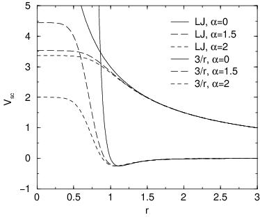
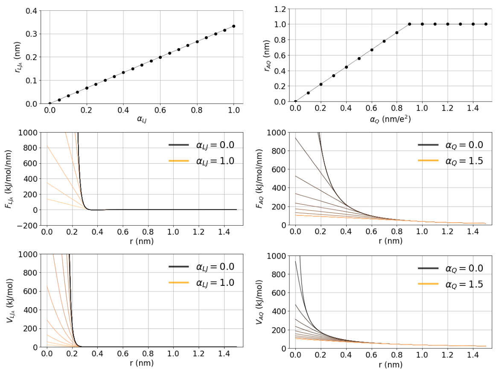

Free energy interactions¶
This section describes the \(\lambda\)-dependence of the potentials used for free energy calculations (see sec. Free energy calculations). All common types of potentials and constraints can be interpolated smoothly from state A (\(\lambda=0\)) to state B (\(\lambda=1\)) and vice versa. All bonded interactions are interpolated by linear interpolation of the interaction parameters. Non-bonded interactions can be interpolated linearly or via soft-core interactions.
Starting in GROMACS 4.6, \(\lambda\) is a vector, allowing different components of the free energy transformation to be carried out at different rates. Coulomb, Lennard-Jones, bonded, and restraint terms can all be controlled independently, as described in the mdp options.
Harmonic potentials¶
The example given here is for the bond potential, which is harmonic in GROMACS. However, these equations apply to the angle potential and the improper dihedral potential as well.
GROMOS-96 bonds and angles¶
Fourth-power bond stretching and cosine-based angle potentials are interpolated by linear interpolation of the force constant and the equilibrium position. Formulas are not given here.
Proper dihedrals¶
For the proper dihedrals, the equations are somewhat more complicated:
Note: that the multiplicity \(n_{\phi}\) can not be parameterized because the function should remain periodic on the interval \([0,2\pi]\).
Tabulated bonded interactions¶
For tabulated bonded interactions only the force constant can interpolated:
Coulomb interaction¶
The Coulomb interaction between two particles of which the charge varies with \({\lambda}\) is:
where \(f = \frac{1}{4\pi \varepsilon_0} = {138.935\,458}\) (see chapter Definitions and Units).
Coulomb interaction with reaction field¶
The Coulomb interaction including a reaction field, between two particles of which the charge varies with \({\lambda}\) is:
Note that the constants \(k_{rf}\) and \(c_{rf}\) are defined using the dielectric constant \({\varepsilon_{rf}}\) of the medium (see sec. Coulomb interaction with reaction field).
Lennard-Jones interaction¶
For the Lennard-Jones interaction between two particles of which the atom type varies with \({\lambda}\) we can write:
It should be noted that it is also possible to express a pathway from state A to state B using \(\sigma\) and \(\epsilon\) (see (144)). It may seem to make sense physically to vary the force field parameters \(\sigma\) and \(\epsilon\) rather than the derived parameters \(C_{12}\) and \(C_{6}\). However, the difference between the pathways in parameter space is not large, and the free energy itself does not depend on the pathway, so we use the simple formulation presented above.
Kinetic Energy¶
When the mass of a particle changes, there is also a contribution of the kinetic energy to the free energy (note that we can not write the momentum \(\mathbf{p}\) as \(m \mathbf{v}\), since that would result in the sign of \({\frac{\partial E_k}{\partial {\lambda}}}\) being incorrect 99):
after taking the derivative, we can insert \(\mathbf{p}\) = \(m \mathbf{v}\), such that:
Constraints¶
The constraints are formally part of the Hamiltonian, and therefore they give a contribution to the free energy. In GROMACS this can be calculated using the LINCS or the SHAKE algorithm. If we have \(k = 1 \ldots K\) constraint equations \(g_k\) for LINCS, then
where \(\mathbf{r}_k\) is the displacement vector between two particles and \(d_k\) is the constraint distance between the two particles. We can express the fact that the constraint distance has a \({\lambda}\) dependency by
Thus the \({\lambda}\)-dependent constraint equation is
The (zero) contribution \(G\) to the Hamiltonian from the constraints (using Lagrange multipliers \(\lambda_k\), which are logically distinct from the free-energy \({\lambda}\)) is
For SHAKE, the constraint equations are
with \(d_k\) as before, so
Soft-core interactions: Beutler et al.¶


Fig. 32 Soft-core interactions at \({\lambda}=0.5\), with \(p=2\) and \(C_6^A=C_{12}^A=C_6^B=C_{12}^B=1\).¶
In a free-energy calculation where particles grow out of nothing, or particles disappear, using the simple linear interpolation of the Lennard-Jones and Coulomb potentials as described in (256) and (255) may lead to poor convergence. When the particles have nearly disappeared, or are close to appearing (at \({\lambda}\) close to 0 or 1), the interaction energy will be weak enough for particles to get very close to each other, leading to large fluctuations in the measured values of \(\partial V/\partial {\lambda}\) (which, because of the simple linear interpolation, depends on the potentials at both the endpoints of \({\lambda}\)).
To circumvent these problems, the singularities in the potentials need to be removed. This can be done by modifying the regular Lennard-Jones and Coulomb potentials with “soft-core” potentials that limit the energies and forces involved at \({\lambda}\) values between 0 and 1, but not at \({\lambda}=0\) or 1.
In GROMACS the soft-core potentials \(V_{sc}\) are shifted versions of the regular potentials, so that the singularity in the potential and its derivatives at \(r=0\) is never reached. This formulation was introduced by Beutler et al.100:
where \(V^A\) and \(V^B\) are the normal “hard core” Van der
Waals or electrostatic potentials in state A (\({\lambda}=0\)) and
state B (\({\lambda}=1\)) respectively, \(\alpha\) is the
soft-core parameter (set with sc_alpha in the
mdp file), \(p\) is the soft-core \({\lambda}\)
power (set with sc_power), \(\sigma\) is the radius
of the interaction, which is \((C_{12}/C_6)^{1/6}\) or an input
parameter (sc_sigma) when \(C_6\) or \(C_{12}\)
is zero. Beutler et al.100 probed various
combinations of the \(r\) power values for the Lennard-Jones
and Coulombic interactions. GROMACS uses \(r^6\) for both,
van der Waals and electrostatic interactions.
For intermediate \({\lambda}\), \(r_A\) and \(r_B\) alter the interactions very little for \(r > \alpha^{1/6} \sigma\) and quickly switch the soft-core interaction to an almost constant value for smaller \(r\) (Fig. 32). The force is:
where \(F^A\) and \(F^B\) are the “hard core” forces. The contribution to the derivative of the free energy is:
The original GROMOS Lennard-Jones soft-core
function 100 uses \(p=2\), but \(p=1\) gives a smoother
\(\partial H/\partial{\lambda}\) curve. Another issue that should be
considered is the soft-core effect of hydrogens without Lennard-Jones
interaction. Their soft-core \(\sigma\) is set with sc_sigma. These
hydrogens produce peaks in \(\partial H/\partial{\lambda}\) at
\({\lambda}\) is 0 and/or 1 for \(p=1\) and close to 0 and/or 1
with \(p=2\). Lowering sc_sigma
will decrease this effect, but it will also increase the interactions
with hydrogens relative to the other interactions in the soft-core
state.
When soft-core potentials are selected (by setting
sc_alpha >0), and the Coulomb and Lennard-Jones
potentials are turned on or off sequentially, then the Coulombic
interaction is turned off linearly, rather than using soft-core
interactions, which should be less statistically noisy in most cases.
This behavior can be overwritten by setting sc-coul=yes. Note that
sc-coul is only taken into account when lambda states
are used, and you can still turn off soft-core
interactions by setting sc-alpha=0. Additionally, the
soft-core interaction potential is only applied when either the A or B
state has zero interaction potential. If both A and B states have
nonzero interaction potential, default linear scaling described above is
used. When both Coulombic and Lennard-Jones interactions are turned off
simultaneously, a soft-core potential is used, and a hydrogen is being
introduced or deleted, the sigma is set to sc-sigma-min,
which itself defaults to sc-sigma-default.
Soft-core interactions: Gapsys et al.¶
In this section we describe the functional form and parameters for the soft-cored non-bonded interactions using the formalism by Gapsys et al. 183.
The Gapsys et al. soft-core is formulated to act on the level of van der Waals and electrostatic forces:
the non-bonded interactions are linearized at a point defined as, \(r_{scLJ}\) or \(r_{scQ}\), respectively.
The linearization point depends on the state of the system as controlled by the \(\lambda\) parameter and
two parameters \(\alpha_Q\) (set with sc-gapsys-scale-linpoint-q) and \(\alpha_{LJ}\) (set with sc-gapsys-scale-linpoint-lj).
The dependence on \(\lambda\) guarantees that the end-states are properly represented by their hard-core potentials.
Fig. 33 illustrates the behaviour of the linearization point, forces and integrated potential energies with respect
to the parameters \(\alpha_Q\) and \(\alpha_{LJ}\). The optimal choices of the parameter values have been systematically explored in 183. These recommended values are set by default when sc-function=gapsys is selected: sc-gapsys-scale-linpoint-q=0.3 and sc-gapsys-scale-linpoint-lj=0.85.


Fig. 33 Illustration of the soft-core parameter influence on the linearization point (top row), forces (middle row) and energies (bottom row) for van der Waals (left column) and electrostatic interactions (right column). The case of two interacting atoms is considered. In state A both atoms have charges of 0.5 and \(\sigma=0.3\) nm, \(\epsilon=0.5\) kJ/mol. In state B all the non-bonded interactions are set to zero. The parameter \(\lambda\) is set to 0.5 and electrostatic interaction cutoff is 1 nm.¶
The parameter \(\alpha_{LJ}\) is a unitless scaling factor in the range \([0,1)\). It scales the position of the point from which the van der Waals force will be linearized. The linearization of the force is allowed in the range \([0,F_{min}^{LJ})\), where setting \(\alpha_{LJ}=0\) results in a standard hard-core van der Waals interaction. Setting \(\alpha_{LJ}\) closer to 1 brings the force linearization point towards the minimum in the Lennard-Jones force curve (\(F_{min}^{LJ}\)). This construct allows retaining the repulsion between two particles with non-zero C12 parameter at any \(\lambda\) value.
The parameter \(\alpha_{Q}\) has a unit of \(\frac{nm}{e^2}\) and is defined in the range \([0,\inf)\). It scales the position of the point from which the Coulombic force will be linearized. Even though in theory \(\alpha_{Q}\) can be set to an arbitrarily large value, algorithmically the linearization point for the force is bound in the range \([0,F_{rcoul}^{Q})\), where setting \(\alpha_{Q}=0\) results in a standard hard-core Coulombic interaction. Setting \(\alpha_{Q}\) to a larger value softens the Coulombic force.
In all the notations below, for simplicity, the distance between two atoms \(i\) and \(j\) is noted as \(r\), i.e. \(r=r_{ij}\).
Forces: van der Waals interactions¶
where the switching point between the soft and hard-core Lennard-Jones forces
\(r_{scLJ} = \alpha_{LJ}(\frac{26}{7}\sigma^6\lambda)^{\frac{1}{6}}\) for state A, and
\(r_{scLJ} = \alpha_{LJ}(\frac{26}{7}\sigma^6(1-\lambda))^{\frac{1}{6}}\) for state B.
In analogy to the Beutler et al. soft core version, \(\sigma\) is the radius of the interaction, which is \((C_{12}/C_6)^{1/6}\)
or an input parameter (set with sc-sigma-LJ-gapsys) when C6 or C12 is zero. The default value for this parameter is sc-sigma-LJ-gapsys=0.3.
Explicit expression:
Forces: Coulomb interactions¶
where the switching point \(r^{sc}\) between the soft and hard-core electrostatic forces is \(r_{scQ} = \alpha_Q(1+|q_iq_j|)\lambda^{\frac{1}{6}}\) for state A, and \(r_{scQ} = \alpha_Q(1+|q_iq_j|)(1-\lambda)^{\frac{1}{6}}\) for state B. The \(\lambda\) dependence of the linearization point for both van der Waals and Coulombic interactions is of the same power \(1/6\).
Explicit expression:
Energies: van der Waals interactions¶
Explicit definition of energies:
Energies: Coulomb interactions¶
\(\partial H / \partial \lambda\): van der Waals interactions¶
Here we provide the explicit expressions of \(\partial H/ \partial \lambda\) for Lennard-Jones potential, when \(r<r_{scLJ}\). For simplicity, in the expression below we use the notation \(r_{scLJ_A}=r_{scA}\) and \(r_{scLJ_B}=r_{scB}\).
\(\partial H/ \partial \lambda\) for Lennard-Jones potential, when \(r \geq r_{scLJ}\) is calculated as a standard hard-core contribution to \(\partial H/ \partial \lambda\): \(\frac{\partial{H}}{\partial{\lambda}} = V_{LJ}^B(r) - V_{LJ}^A(r)\).
\(\partial H/ \partial \lambda\) for Coulomb interactions¶
Here we provide the explicit expressions of \(\partial H/ \partial \lambda\) for Coulomb potential, when \(r<r_{scQ}<r_{cutoffQ}\). For simplicity, in the expression below we use the notation \(r_{scQ_A}=r_{scA}\) and \(r_{scQ_B}=r_{scB}\).
\(\partial H/ \partial \lambda\) for Coulomb potential, when \(r < r_{scQ} \geq r_{cutoffQ}\) is calculated using the same expression above by setting \(r_{scA}=r_{cutoffQ}\) and \(r_{scB}=r_{cutoffQ}\).
\(\partial H/ \partial \lambda\) for Coulomb potential, when \(r \geq r_{scQ} < r_{cutoffQ}\) is calculated as a standard hard-core contribution to \(\partial H/ \partial \lambda\): \(\frac{\partial{H}}{\partial{\lambda}} = V_{Q}^B(r) - V_{Q}^A(r)\).